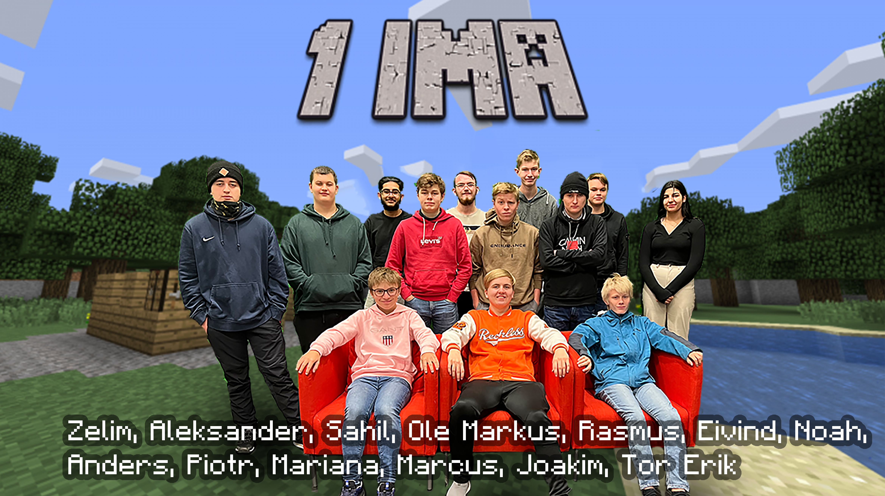

1 IMA
Om 1 IMA
| Time | Mandag | Tirsdag | Onsdag | Tordag | Fredag |
|---|---|---|---|---|---|
| 1 | Matematikk | Prod. Historiefortelling | Engelsk | Engelsk | Konseptutv. programmering |
| 2 | Engelsk | Teknologiforståelse | Naturfag | Yrkesfagligfordypning | Konseptutv. og programmering |
| 3 | Klassens time | Teknologiforståelse | Naturfag | Yrkesfagligfordypning | Matematikk |
| 4 | Prod. Historiefortelling | Prod. Historiefortelling | Konseptutv. og programmering | Yrkesfagligfordypning | Kroppsøvning |
| 5 | Teknologiforståelse | Prod. Historiefortelling | Yrkesfagligfordypning |